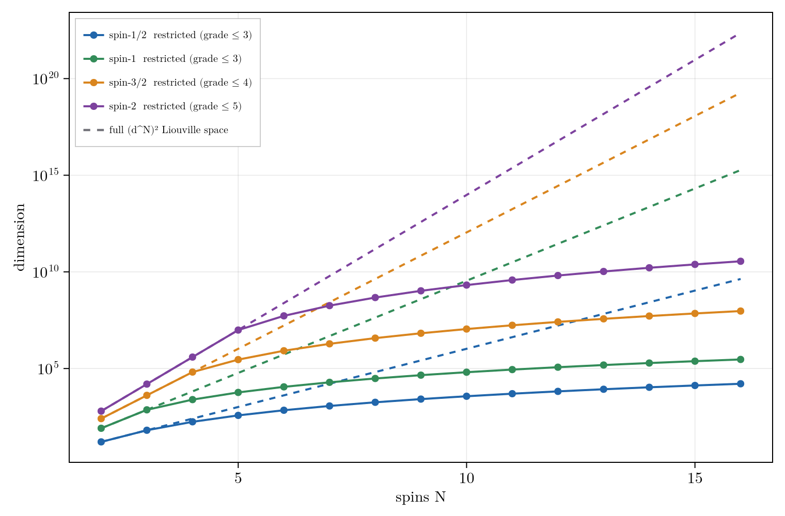

Grade Truncation and Polynomial State Space Scaling
Grade truncation is the central approximation of the package: it caps the correlation order a state carries, so systems too large for full Liouville space become tractable.
Grade as Correlation Order
The density operator is expanded in a basis of product operators, tensor products of a single-site operator over the $N$ sites. A basis element's grade is its number of non-identity factors, which is its correlation order: grade one is a single-spin term, grade two a two-spin correlation, up to a fully $N$-body term. The single-site operators depend on the spin. At spin-$\tfrac12$ they are the four Paulis $\{I, X, Y, Z\}$, so a product operator is a Pauli string. At dimension $d = 2S+1$ they are the $d^2$ spherical tensors (see Higher-Spin). Grade counts non-identity sites in every case. Grade truncation keeps correlation order at most $k_{\max}$, so $k_{\max}$ is the highest order of multi-spin correlation the model carries.
\[\rho = \sum_\alpha c_\alpha\, P_\alpha, \qquad P_\alpha = \bigotimes_{s=1}^{N} O^{(s)}_{a_s}, \qquad g(P_\alpha) = \#\{\,s : a_s \neq 0\,\}.\]
Each $O^{(s)}_{a_s}$ is a single-site operator ($a_s = 0$ the identity), so $g$ counts the non-identity factors.
Keeping $g\le k_{\max}$ leaves a basis of dimension
\[D(N,k) = \sum_{g=0}^{k}\binom{N}{g}\,3^{g},\]
so $D(N,N)=4^N$ is the full Liouville space, while for $k\ll N$ the dimension is polynomial in $N$ of degree $k$,
\[D(N,k) \sim \frac{(3N)^{k}}{k!}.\]
The dimension counts above are for spin-$\tfrac12$ (three non-identity operators per site). For a site of dimension $d$ there are $d^2-1$ non-identity operators and the full Liouville space is $(d^2)^N$, so replace $3 \to d^2-1$ and $4^N \to (d^2)^N$ throughout.
D = basis_size(N, kmax) # dimension of the retained basis
b = restricted_basis(N, kmax) # the basis itselfAt fixed grade the retained basis grows polynomially in $N$, with a per-grade prefactor $(d^2-1)^k$ that rises with the site dimension $d$ (three operators per spin-1/2 site, eight per spin-1, fifteen per spin-3/2), so for higher spin the truncated basis is larger at a given grade. The full $(d^N)^2$ Liouville space grows exponentially in $N$ with a base that rises faster still, so the retained fraction is smallest exactly where the spin is highest, even as the grade needed to reach the floor tends to climb with the spin manifold.

Grade-truncated basis dimension (solid) versus the full (d^N)^2 Liouville space (dashed), spin-1/2 through spin-2. The cutoff is k_max = 3 for spin-1/2 and spin-1 and climbs for higher spin; the restricted basis stays polynomial in N.
The Gaussian Level
The grade-2 coefficients are the one- and two-point functions, the means $\langle I_a^{(s)}\rangle$ and the pairwise correlations $\langle I_a^{(s)} I_b^{(t)}\rangle$, which are the data of a Gaussian state. If the dynamics preserved Gaussianity, Wick's theorem would reconstruct every higher correlation from these and grade $> 2$ would carry no information. The su(2) algebra is nonlinear, so they do not: the equation of motion for a $k$-body correlation couples to $(k+1)$-body correlations, an open moment hierarchy that does not close at order two. Grade truncation drops the discarded correlations rather than Wick-factorizing them, so a grade-2 model is a linear projection onto the Gaussian data (mean field plus fluctuations, the second-cumulant picture), not a cumulant closure. It is exact when the dynamical Lie algebra closes at grade 2 and otherwise approximate at the per-grade rate of The Convergence Rate. Grade $> 2$ is the non-Gaussian content.
The Exactness Condition
Grade-$k_{\max}$ truncation is a projection $\mathcal{P}$ onto the retained subspace, with complement $\mathcal{Q}$. Whether that projection discards anything is set at two levels, the generator and the trajectory.
At the generator level the test is closure. The retained subspace is invariant under $\mathcal{L}$ when the generator maps it into itself, which holds when the dynamical Lie algebra built from the Hamiltonian terms and the jump operators closes at grade $\le k_{\max}$:
\[\mathcal{L}\rho = -i[H,\rho] + \sum_j\Big(L_j\rho L_j^\dagger - \tfrac12\{L_j^\dagger L_j,\rho\}\Big), \qquad \mathcal{Q}\mathcal{L}\mathcal{P} = 0 .\]
When $\mathcal{Q}\mathcal{L}\mathcal{P} = 0$ the truncated generator reproduces the full dynamics for every state in the retained subspace and for all time, since $\mathcal{P}\,e^{\mathcal{L}t}\,\mathcal{P} = e^{(\mathcal{P}\mathcal{L}\mathcal{P})\,t}$. This closing grade is the exactness floor, a property of the coupling topology alone.
Closure is sufficient but stronger than a single run requires. A given propagation explores only the reachable set of its initial state, the span of $c_0, \mathcal{L}c_0, \mathcal{L}^2 c_0, \dots$. If that reachable set lies inside $\mathcal{P}$ the run is exact even when the full algebra does not close at $k_{\max}$, because the trajectory never populates the strings that would leak. The floor is derived, tabulated by geometry, and made state-sharp in this reachable sense in The Exactness Floor. A direct certificate from the generator-level DLA size:
julia> using RestrictedSpinDynamics
julia> H = hamiltonian(zeeman(3, [0.0, 3.0, 7.0]), jcoupling(3, 1, 2, 5.0), jcoupling(3, 2, 3, 5.0));
julia> d = dla_dimension(3, collect(keys(H))) # strings reachable under nested commutation
30
julia> (d, basis_size(3, 2), 4^3) # DLA size vs the grade-2 basis vs the full 4^N space
(30, 37, 64)basis_size(N, kmax) returns the grade-truncated dimension without building the basis. When the DLA fits inside a low cutoff that cutoff loses nothing and the truncation is exact.
For an important class of couplings the closing grade is $N$ itself, so no cutoff below the full space is exact. Isotropically coupled networks (Heisenberg, $XX+YY+ZZ$), the regime of strong homonuclear coupling, and zero- to ultralow-field (ZULF) NMR all mix every correlation order: the algebra fills each grade up to $N$, and under isotropic coupling the reachable set grows exponentially as well, so even it is large. Grade truncation is then a convergence-controlled approximation rather than an exact reduction. Validate it against a small full run and take the saving from symmetry, weight sectors, and reachability rather than from the grade cutoff alone. See Zero- and Ultralow-Field (ZULF) Simulations.
Convergence Below the Floor
When the cutoff sits below the floor the error behaves in one of two ways. Truncating below a low closing grade severs the algebra and the failure is qualitative, returning identically zero where the signal is large (the AA'X system at a cutoff of two is the validated gate). When the algebra instead fills every grade, the error is a geometric tail: each added grade cuts it by a roughly constant factor, so $k_{\max}$ is a predictable accuracy/cost dial, and deep truncation does better still, since the tail is factorial and falls faster than any geometric rate.
That per-grade factor is a structural, gauge-invariant property of the generator: the grade-raising content of the Liouvillian, read directly from $\mathcal{L}$. The predictive law $r \approx \rho/(1+\rho)$, how to read $\rho$ at high field versus zero field, and a worked chain are in The Convergence Rate.
Choosing the Cutoff
For a system that does not fit in full space:
- Compute the closure floor. If the maximum grade reached by the dynamical Lie algebra is small, use it and the model is exact.
- Otherwise converge the observable: increase the cutoff until $\langle O\rangle(t)$ is stationary to tolerance. Local, low-order observables converge at a lower cutoff than global or high-order ones.
- Bound the discarded flow. The boundary block $\mathcal{Q}\mathcal{L}\mathcal{P}$ is assembled directly; a zero norm certifies exactness for every state and a small norm bounds the worst-case error. The test is sufficient, not necessary: a nonzero norm can still leave a given run exact when its reachable set avoids the boundary.
- Prune within the cutoff. Most retained strings carry no amplitude; restrict to the populated support as in Reachability, Control, and the Adaptive Basis.
A worked example runs the recipe on a common organic motif: two scalar-coupled protons among uncoupled spectators, an AX pair sitting in a four-spin register. Because the coupling is confined to one pair, the algebra closes at grade 2 (step 1), and a grade-2 basis reproduces the full-space dynamics while spanning a quarter of the $4^N$ Liouville space:
julia> using RestrictedSpinDynamics
julia> N = 4; # sites 1-2 share a scalar coupling; sites 3-4 are uncoupled spectators
julia> H = hamiltonian(zeeman(N, 2pi .* [10.0, 40.0, 80.0, 130.0]), jcoupling(N, 1, 2, 2pi*8.0));
julia> dla_report(N, collect(keys(H))).grade_floor # the algebra closes at grade 2
2
julia> (basis_size(N, 2), 4^N) # grade-2 basis vs the full Liouville space
(67, 256)
julia> obs = Dict("iz1" => spin_op(N, 1, :z));
julia> function traj(k)
b = restricted_basis(N, k)
propagate(b, build_liouvillian(b, H), state(b, polarized(1, :z)), 0:0.02:0.3;
observables = obs, dt = 1e-3).traces["iz1"]
end;
julia> maximum(abs, traj(2) .- traj(4)) < 1e-9 # grade 2 reproduces the full trajectory
true
julia> maximum(abs, traj(1) .- traj(4)) > 0.02 # grade 1 (mean-field) misses the coupling
trueGrade 1 keeps only single-spin order, so it misses the antiphase term the coupling builds and tracks the site-1 polarization wrongly; grade 2 adds the two-spin correlations the pair needs and is exact (step 2 is unnecessary here, since step 1 already landed on a cheap exact cutoff). When the coupling is instead extended and strong, as in the isotropic and ZULF regime above, the floor climbs to $N$ and step 2 governs the choice: the error then falls geometrically with the cutoff at the coupling-set rate shown in The Convergence Rate.
grade_tiers automates this recipe: under a single err_tol knob it assigns each grade shell a tier (exact, memory, Markovian, or drop) and grade_reduce assembles the reduced generator. The figures of merit, the tier meanings, and a worked example are on the Nakajima-Zwanzig Formalism page.
See Also
- The Convergence Rate: the theory of the per-grade factor $r$ when the cutoff sits below the floor.
- Symmetry Capabilities: exact symmetry sectors (Pauli parity, definite total-$S_z$ weight, site-permutation) that compose with the grade cap.
- Reachability, Control, and the Adaptive Basis: dynamics-informed basis pruning within the cutoff.